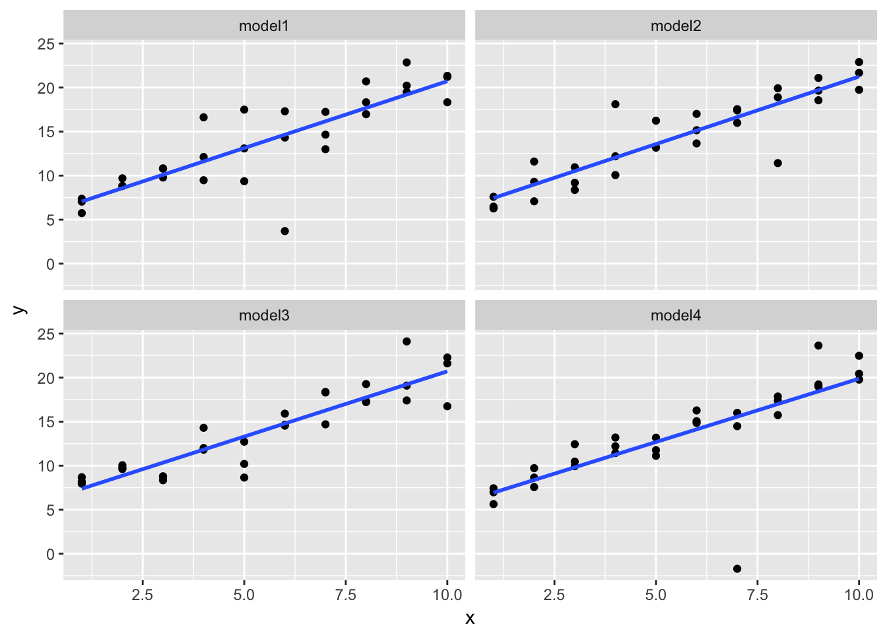
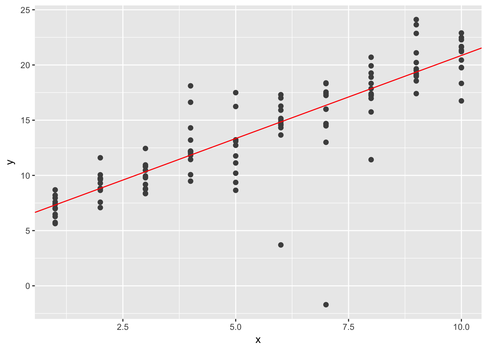
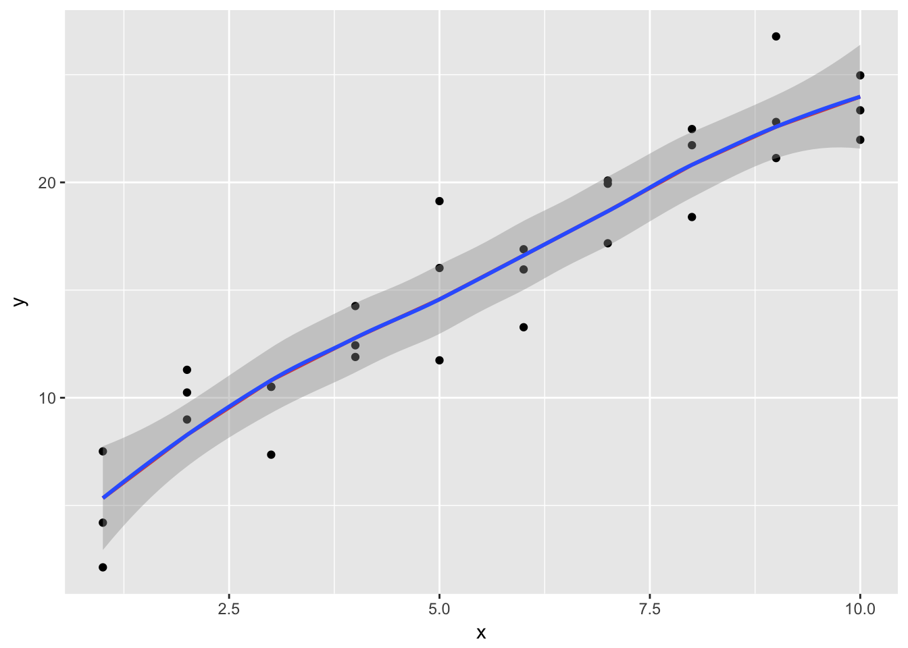
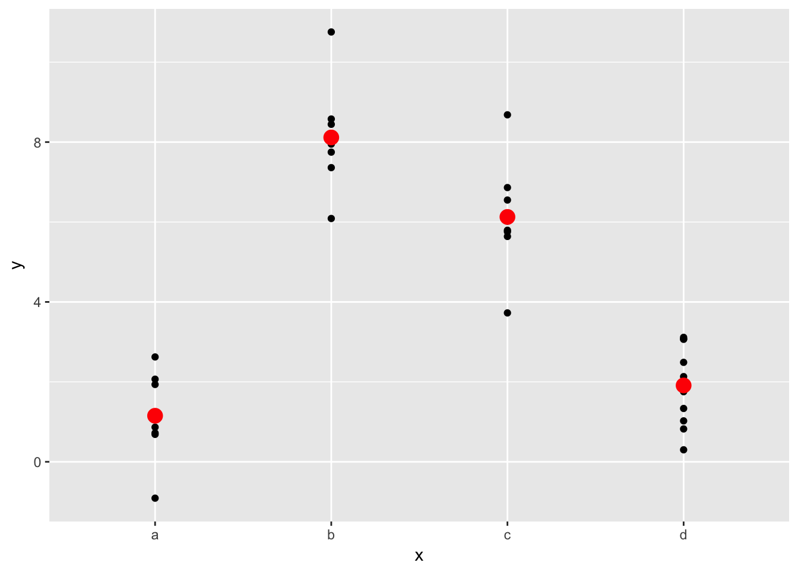

Chapter 23 - Model basics
library(tidyverse)23.2 - A simple model
Problem 1
One downside of the linear model is that it is sensitive to unusual values because the distance incorporates a squared term. Fit a linear model to the simulated data below, and visualise the results. Rerun a few times to generate different simulated datasets. What do you notice about the model?
sim1a <- tibble(
x = rep(1:10, each = 3),
y = x * 1.5 + 6 + rt(length(x), df = 2)
)set.seed(20180315)
sim1a <- tibble(
x = rep(rep(1:10, each = 3), 4),
y = x * 1.5 + 6 + rt(length(x), df = 2),
model = rep(c("model1", "model2", "model3", "model4"), each = length(x) / 4)
)
sim1a %>%
ggplot(aes(x, y)) +
geom_point() +
geom_smooth(method = "lm", se = FALSE) +
facet_wrap(~model)
The fitted line is surprsingly stable, but it doesn’t do a good job accounting for values that are far from the fitted line.
Problem 2
One way to make linear models more robust is to use a different distance measure. For example, instead of root-mean-squared distance, you could use mean-absolute distance:
measure_distance <- function(mod, data) {
diff <- data$y - make_prediction(mod, data)
mean(abs(diff))
}Use optim() to fit this model to the simulated data above and compare it to the linear model.
library(modelr)
model1 <- function(a, data) {
a[1] + data$x * a[2]
}
measure_distance <- function(mod, data) {
diff <- data$y - model1(mod, data)
mean(abs(diff))
}
best <- optim(c(0, 0), measure_distance, data = sim1a)
ggplot(sim1a, aes(x, y)) +
geom_point(size = 2, colour = "grey30") +
geom_abline(intercept = best$par[1], slope = best$par[2], color = "red")
Problem 3
One challenge with performing numerical optimisation is that it’s only guaranteed to find one local optima. What’s the problem with optimising a three parameter model like this?
model1 <- function(a, data) {
a[1] + data$x * a[2] + a[3]
}23.3 Visualizing models
Instead of using lm() to fit a straight line, you can use loess() to fit a smooth curve. Repeat the process of model fitting, grid generation, predictions, and visualisation on sim1 using loess() instead of lm(). How does the result compare to geom_smooth()?
sim1_loess <- loess(y ~ x, data = sim1)
grid <- sim1 %>%
data_grid(x) %>%
add_predictions(sim1_loess)
ggplot(sim1, aes(x)) +
geom_point(aes(y = y)) +
geom_line(aes(y = pred), data = grid, colour = "red", size = 1) +
geom_smooth(aes(y = y))
The result is identical to geom_smooth() without the standard error shading.
Problem 3
add_predictions() is paired with gather_predictions() and spread_predictions(). How do these three functions differ?
gather_predictions() and spread_predictions() work with multiple models and add_predictions() only works with one model. gather_predictions() adds each prediction as a new row with a column for model name and a column for prediction. spread_predictions() adds a new column for the predictions from each model.
Problem 3
What does geom_ref_line() do? What package does it come from? Why is displaying a reference line in plots showing residuals useful and important?
geom_ref_line(), from library(modelr), can add horizontal and vertical reference lines. This could be useful for visually partitioning points or comparing the slope or slopes from models against levels lines.
Problem 4
Why might you want to look at a frequency polygon of absolute residuals? What are the pros and cons compared to looking at the raw residuals?
A frequency polygon of absolute residuals is useful for exploring the magnitudes of errors from a model. A problem is that is can obscure real differences between residuals from above the fitted model and residuals below the fitted model.
23.4 Formulas and model families
Problem 1
What happens if you repeat the analysis of sim2 using a model without an intercept. What happens to the model equation? What happens to the predictions?
mod2 <- lm(y ~ x - 1, data = sim2)
grid <- sim2 %>%
data_grid(x) %>%
add_predictions(mod2)
ggplot(sim2, aes(x)) +
geom_point(aes(y = y)) +
geom_point(data = grid, aes(y = pred), colour = "red", size = 4)
The model equation changes from y = a_0 + a_1 * xb + a_2 * xc + a_3 * xd to y = a_1 * xa + a_2 * xb + a_3 * xc + a_4 * xd. Basically, the first model replaces one level of the equation with the y-intercept. The second model has no intercept and all four levels of the discrete variable. The predictions don’t change.
Problem 2
Use model_matrix() to explore the equations generated for the models I fit to sim3 and sim4. Why is * a good shorthand for interaction?
mod1 <- lm(y ~ x1 + x2, data = sim3)
mod2 <- lm(y ~ x1 * x2, data = sim3)
model_matrix(y ~ x1 * x2, data = sim3)## # A tibble: 120 x 8
## `(Intercept)` x1 x2b x2c x2d `x1:x2b` `x1:x2c` `x1:x2d`
## <dbl> <dbl> <dbl> <dbl> <dbl> <dbl> <dbl> <dbl>
## 1 1 1 0 0 0 0 0 0
## 2 1 1 0 0 0 0 0 0
## 3 1 1 0 0 0 0 0 0
## 4 1 1 1 0 0 1 0 0
## 5 1 1 1 0 0 1 0 0
## 6 1 1 1 0 0 1 0 0
## 7 1 1 0 1 0 0 1 0
## 8 1 1 0 1 0 0 1 0
## 9 1 1 0 1 0 0 1 0
## 10 1 1 0 0 1 0 0 1
## # ... with 110 more rowsmod1 <- lm(y ~ x1 + x2, data = sim4)
mod2 <- lm(y ~ x1 * x2, data = sim4)